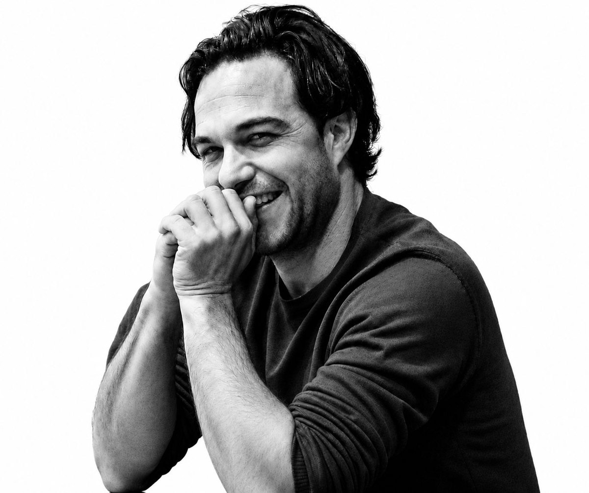

Learn More
A twenty-year documentary practice at the highest international level, and the mentorship platform built from it.

The Photographer
Sebastian Liste is a documentary photographer, sociologist, creative entrepreneur and founder of PhotoDocumentarians, a mentorship platform for documentary photographers. His work has taken him across the Americas, the Middle East, Africa, Asia and Europe, and has been published in National Geographic, TIME, The New York Times and The New Yorker.
His long-term projects have been funded by the Pulitzer Center, the Magnum Foundation, the Getty Images Grant and the Alexia Foundation, support reserved for work that requires years, not weeks, inside the communities it documents. He is a member of NOOR Images and a Leica Ambassador. You can follow his photography on Instagram, where the projects and the process sit side by side, and find him on X.
In the Field
Sebastian Liste’s work is defined by duration. He returns to the same places for years, building trust and letting stories reveal themselves over time. His photography of the Amazon grew into Amazon, the last frontier, a body of work that could only have been made by someone willing to follow the edge of the forest across the basin, by road, river and plane, for a decade.
That commitment runs through his other projects too: years inside a self-governed community in Salvador de Bahia for Urban Quilombo, and the Syrian war and the experience of exile, from Aleppo to Istanbul. Even an assignment turned into years. A New Yorker story on the Tower of David in Caracas with the writer Jon Lee Anderson led him inside Vista Hermosa, a prison run by its own inmates, for On the Inside, and from there into Bullets and dogs, a decade documenting violence across Latin America. The through-line is patience, the conviction that the most important stories are the ones that take time to tell.
Recognition & Affiliations
Sebastian Liste’s work has been recognized with a World Press Photo award, the Rémi Ochlik Award at Visa pour l’Image, and the Ian Parry Grant, among many others. His photographs have been exhibited from New York to Tokyo, including at Visa pour l’Image in Perpignan and the CaixaForum Museum in Madrid and Barcelona.
Recognition, for him, has never been the point. It is a byproduct of doing the work well over a long time and finding ways to share his stories globally. That same standard is what he now brings to teaching, and you can find Sebastian on LinkedIn discussing the craft and economics of sustaining a documentary career.
The Platform
PhotoDocumentarians is the mentorship platform and global community that Sebastian Liste founded, built from fifteen years of teaching and mentoring photographers from across the world, alongside a full working practice. It offers one-to-one support, editing sessions, practical training, and masterclasses made with leaders from respected photo agencies, publications, and organizations in the industry. The story of how PhotoDocumentarians came together is the story of a career turned into a method.
The platform serves photographers who need structured support to bring their projects to publication, exhibition, and funding. The conviction behind it is simple. The story that nobody sees changes nothing. The profession offers photographers two trades. One is invisibility as the price of meaningful work. The other is commercial work to pay for the projects they care about. PhotoDocumentarians refuses both, because purpose and profit should not be in conflict for photographers working on stories that matter. The same conviction has guided Sebastian’s own career for twenty years. The mentorship, where he now teaches it, is described in full on the PhotoDocumentarians platform.
The Gap Nobody Addresses
Documentary photographers are trained in authorship and never in the two things that come after it, distribution and the economics of sustaining a practice. Most projects are never finished or never seen. Sebastian Liste’s diagnosis is blunt. The enemy is not a lack of talent but a lack of the knowledge, systems and guidance that turn images into photo stories, and photo stories into impact. Shooting is not the end of the photo story. Distribution is the final act of authorship. PhotoDocumentarians was built to address exactly that gap and help photographers finish their projects and get them seen.
The outcomes bear it out. Photographers mentored by Sebastian have won the National Geographic Explorer Grant, the Alexia Grant, the Gomma Grant and Pulitzer Center grants; published in The Guardian, Stern, Le Monde, GEO, Marie Claire and El País; exhibited at Visa pour l’Image, Arles OFF, Xposure Festival, Belfast Photo Festival and Cortona On The Move; and produced their first photo books. The photographers behind those results speak for themselves on PhotoDocumentarians.